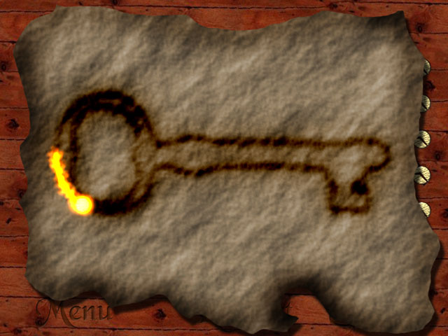
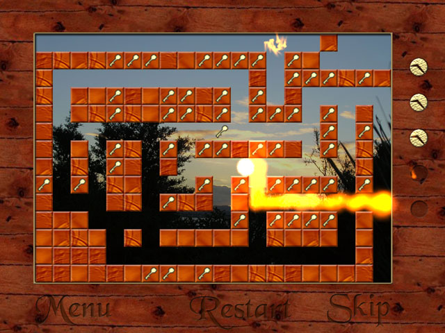
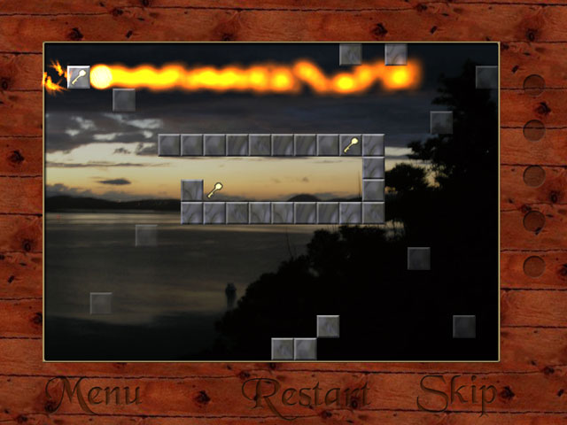

Trail Bay
This is a puzzle game where you move a fiery glowing ball around a maze, with photos of New Zealand in the background.
Trail Bay (Full version) (12 MB, Windows only)

Trail Bay was my first attempt at a commercial game. In 2006, I had just finished the first year of my engineering degree, and my first summer job at a power company. After 10 weeks of full time work in an office, I decided that I would rather be making games.
I thought I’d finish Trail Bay in a few months. It actually took a whole year, even after cutting lots of features.
I made a free trial version and put the full version on sale for $20.
A few hundred people downloaded the trail. I didn’t sell any copies of the full version.
Here are some links for historical interest:
Trail Bay (Demo) (5 MB, Windows only)
Loose Leaf Games, the website I made to sell Trail Bay.


